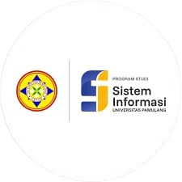
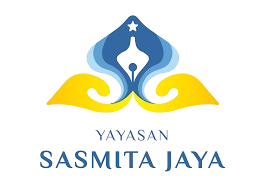
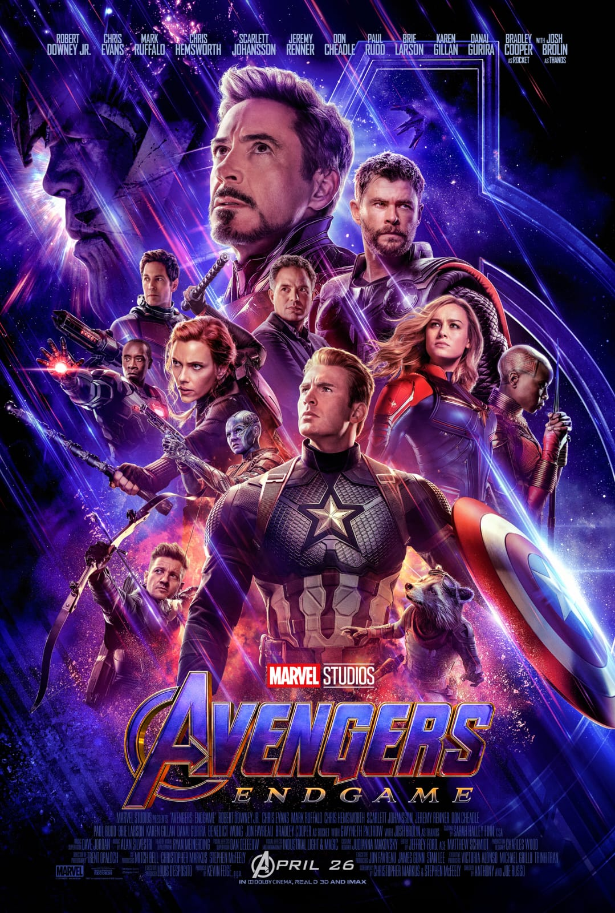
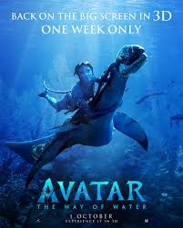
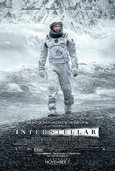
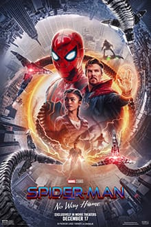
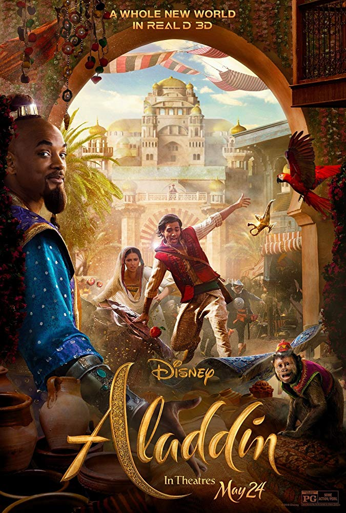

Platform Informasi & Pemesanan Tiket Film Terkini


Setelah Thanos berhasil melenyapkan setengah dari semua kehidupan di alam semesta menggunakan Infinity Stones, para anggota Avengers yang tersisa dan sekutu mereka harus bersatu kembali. Mereka menyusun rencana perjalanan waktu (time heist) untuk mengumpulkan kembali batu-batu tersebut dari masa lalu guna membatalkan tindakan Thanos dan mengembalikan kedamaian di alam semesta.

Berlatar waktu lebih dari satu dekade setelah kejadian film pertama, film ini menceritakan tentang keluarga Jake Sully (Sam Worthington) dan Neytiri (Zoe Saldaña) bersama anak-anak mereka. Kedamaian mereka kembali terusik saat bangsa manusia (RDA) kembali menginvasi Pandora untuk merebut planet tersebut karena Bumi yang mulai sekarat. Demi melindungi klan hutan mereka dari kejaran musuh lama—Kolonel Miles Quaritch yang dihidupkan kembali dalam tubuh Avatar—Jake terpaksa membawa keluarganya mengungsi. Mereka mencari perlindungan ke wilayah pesisir samudra dan belajar beradaptasi dengan budaya serta gaya hidup klan air bernama Metkayina.

Cooper, seorang mantan pilot NASA yang menjadi petani, menemukan pola gravitasi aneh di kamar putrinya, Murph. Petunjuk tersebut menuntunnya ke markas rahasia NASA yang dipimpin oleh Profesor Brand. Umat manusia sedang di ambang kepunahan, dan satu-satunya harapan adalah mengeksplorasi tiga planet potensial di galaksi lain melalui sebuah lubang cacing misterius. Dilema terbesar Cooper adalah ia harus meninggalkan anak-anaknya demi misi yang belum pasti berhasil. Akibat efek dilatasi waktu di dekat lubang hitam bernama Gargantua, waktu berjalan jauh lebih lambat bagi para astronot dibandingkan orang-orang di Bumi. Setiap jam yang mereka habiskan di planet pertama setara dengan 7 tahun waktu di Bumi, membuat Murph tumbuh dewasa mendahului usia ayahnya. Cerita memuncak pada petualangan melintasi dimensi kelima (Tesseract) di mana Cooper berusaha mengirimkan data kuantum ke masa lalu untuk menyelamatkan umat manusia.

Cerita bermula setelah identitas Peter Parker (Tom Holland) sebagai Spider-Man dibongkar oleh Mysterio. Merasa hidupnya dan orang-orang terdekatnya hancur akibat sorotan publik, Peter meminta bantuan Doctor Strange (Benedict Cumberbatch) untuk merapal mantra sihir agar semua orang melupakan identitasnya. Sayangnya, kesalahan saat merapal mantra justru mengacaukan multiverse dan menarik musuh-musuh Spider-Man dari dimensi lain datang ke dunianya.

seorang pemuda jalanan miskin yang tidak sengaja menemukan lampu ajaib berisi Jin yang bisa mengabulkan tiga permintaan. Ia menggunakan kekuatan tersebut untuk menyamar sebagai pangeran demi merebut hati Putri Jasmine dan menggagalkan rencana jahat Wazir Agung Jafar.